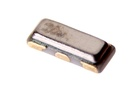
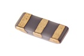

SMD (1206-3) 12 MHz Ceramic Resonator - CR16312
Summary
Name: SMD (1206-3) 12 MHz Ceramic Resonator
ID: CERE-1263-X-MZ12-01
Hex ID: CR16312
WebPage: https://github.com/oomlout/oomlout-OOMP/wiki/CERE-1263-X-MZ12-01
Short URL: http://oom.lt/CR16312
Revision History: https://github.com/oomlout/oomlout-OOMP/blob/master/parts/CERE-1263-X-MZ12-01/
| Type |
Size |
Color |
Description |
Index |
CERE
Ceramic Resonator |
1263
SMD (1206-3) |
X
|
MZ12
12 MHz |
01
|
Images


About
This part is awaiting a description.
Specifications
| Info |
Value |
| Type |
Ceramic Resonator |
| Size |
SMD (1206-3) |
| Description |
12 MHz |
| Width |
3.2 mm |
| Height |
0.9 mm |
| Length |
1.3 mm |
Extra Details
Spotted a mistake, want to add more? Let us know oomp@oomlout.com
All images and resources are licensed [CC BY-SA] unless otherwise stated (ie. the datasheets)